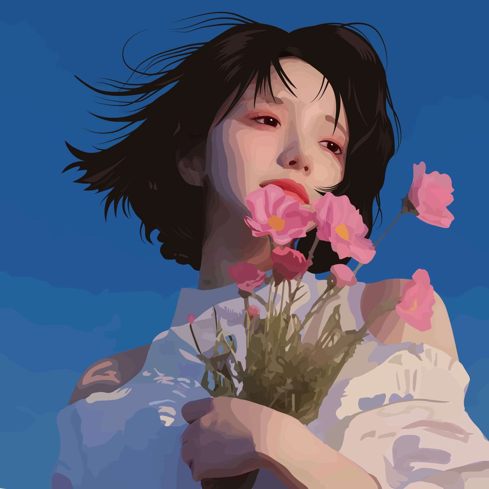

Дівчина (як я її назвала Кетти) з квітами виглядає так, ніби несе в собі спокій і водночас очікування чогось нового. Її погляд спрямований уперед, він світлий і впевнений, ніби вона бачить обриси майбутнього, яке ще тільки формується. Коротке темне волосся додає образу рішучості й свободи, а білий одяг підкреслює чистоту й внутрішню гармонію. Букет рожевих квітів у руках виглядає символом ніжності та надії, він контрастує з глибиною її погляду, створюючи баланс між м’якістю й силою. Від неї відчувається тепло, але й певна відстороненість — ніби вона вже зробила крок далі, залишивши позаду сумніви. У цьому портреті є відчуття руху вперед, навіть якщо сама постать нерухома. Вона ніби уособлює момент переходу: від теперішнього до майбутнього, від мрії до дії. Її образ залишає враження впевненості, спокою й очікування світлих змін.